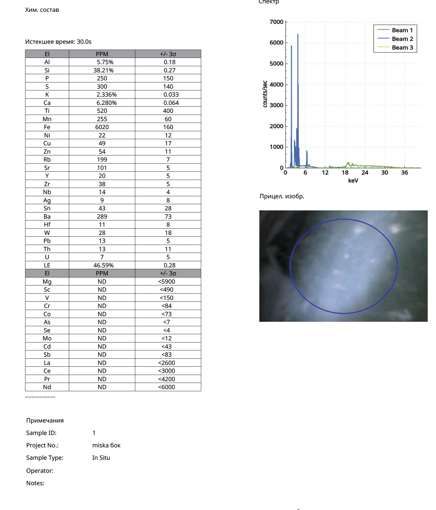

Research Article · Reference Object ro-song-005
X-Ray Fluorescence Analysis of a Pale Grey-Bluish Brush Washer: Glaze Chemistry in the Context of Southern Song Guan Ware Technology
Nona Dronova — Zenodo, published 4 November 2026 (v1) — Chinese Ceramic Archaeometry · Southern Song Guan Ware
Abstract
This study presents the results of portable X-ray fluorescence (pXRF) analysis of a ceramic brush washer with a pale grey-bluish glaze. Two measurements were made on the vessel: one on the side wall and one on the glazed base.
The results demonstrate an exceptionally high degree of compositional homogeneity at both measurement points. The concentrations of major and trace elements are practically identical, indicating that the vessel is covered with a single homogeneous glaze and shows no signs of reglazing, restoration or later surface modification.
The glaze is characterised by elevated concentrations of silica and calcium, a clear predominance of lime over alkaline fluxes, an extremely low titanium content, negligible lead concentrations and a complete absence of artificial colourants.
Comparison with published analytical studies of the Southern Song Guan kilns at Jiaotanxia, Laohudong and Wansongling shows close agreement in the principal technological parameters, including a high-calcium glaze chemistry, iron-based colouring, low titanium and a leadless high-temperature firing technology.
The analytical data define a coherent system of high-temperature lime glaze, coloured exclusively by iron and closely related to the archaeometric characteristics of Southern Song Guan ware.
Keywords: Guan ware; Southern Song dynasty; brush washer; celadon; X-ray fluorescence analysis; archaeometry; lime glaze; Chinese ceramics; high-temperature glaze technology.
1. Introduction
Guan wares (官窑) occupy a prominent place among the imperial ceramics of the Southern Song dynasty.
One of the defining technological features of Southern Song Guan ware is the use of high-temperature, high-lime glazes producing subtle grey-blue, grey-green and jade-like surface tones. These visual effects were achieved through carefully controlled glaze composition and a reducing firing atmosphere, rather than through the addition of artificial pigments.
Archaeometric studies of kiln materials from Jiaotanxia, Laohudong and Wansongling have established a characteristic technological profile of Guan glazes, including elevated calcium, low titanium, iron-controlled colour and the absence of lead-based flux systems.
The present study examines the chemical composition of the glaze of a pale grey-bluish brush washer and compares the results with published archaeometric data on the Southern Song Guan kilns.
2. Description of the Object
The object under study is a glazed ceramic brush washer.
Visual examination reveals:
- a uniform monochrome glaze;
- a pale grey-bluish colour;
- no painted decoration;
- no localised artificial colour effects;
- a soft vitreous surface lustre;
- visually uniform glaze coverage over the whole vessel.
The glaze covers both the body and the base of the vessel in a continuous layer.
The aiming images of the instrument show good contact between the analyser window and the glaze surface, ensuring high measurement quality.
3. Materials and Methods
The analysis was carried out with a portable X-ray fluorescence spectrometer in Geochem (3-Beam) Extra mode.
| Parameter | Recorded value |
|---|---|
| Instrument serial number | 940487 |
| Analytical mode | Geochem (3-Beam) Extra |
| Date | 3 November 2026 |
| Acquisition time | 30 seconds per reading |
| Sample ID | 1 |
| ID 1 – side wall | Glazed side surface (project miska bok) |
| ID 2 – base | Glazed underside (13:54:51; project miska niz) |
| Measurement type | In situ, non-destructive |
Two analytical points were examined:
- ID 1 – Side wall — glazed side surface of the vessel.
- ID 2 – Base — glazed underside of the vessel.
The light-element balance (LE) was approximately 45–46% in both readings (46.59% and 45.49%), indicating comparable analytical conditions at the two points.
4. Results of the X-Ray Fluorescence Analysis
Table 1. Composition of the principal elements.
| Element | Side wall | Base |
|---|---|---|
| Silicon (Si) | 38.21 wt% | 38.74 wt% |
| Calcium (Ca) | 6.280 wt% | 5.951 wt% |
| Aluminium (Al) | 5.75 wt% | 5.60 wt% |
| Potassium (K) | 2.336 wt% | 2.378 wt% |
| Iron (Fe) | 6020 ppm | 6160 ppm |
| Manganese (Mn) | 255 ppm | 340 ppm |
| Barium (Ba) | 289 ppm | 259 ppm |
| Rubidium (Rb) | 199 ppm | 211 ppm |
| Strontium (Sr) | 101 ppm | 96 ppm |
| Zirconium (Zr) | 38 ppm | 37 ppm |
| Yttrium (Y) | 20 ppm | 23 ppm |
| Niobium (Nb) | 14 ppm | 17 ppm |
| Lead (Pb) | 13 ppm | 20 ppm |
The two measurements show practically complete chemical agreement.
The agreement extends not only to the major elements but to the whole set of detected trace elements.
5. Homogeneity of the Glaze
One of the most significant results of this study is the striking compositional homogeneity of the two analysed locations.
Silicon, calcium, aluminium, potassium, iron, rubidium, strontium, zirconium, yttrium and niobium are present in practically identical concentrations.
The glaze on the body and the glaze on the base therefore represent a single technological batch and a single firing system.
No signs of re-coating, restoration or later surface modification were found.
The analytical data define a fully homogeneous glaze system.
6. Oxide Composition
Table 2. Calculated oxide equivalents (stoichiometric conversion, normalised to 100%).
| Oxide | Side wall | Base |
|---|---|---|
| SiO₂ | 77.7% | 77.2% |
| Al₂O₃ | 10.3% | 9.9% |
| CaO | 8.4% | 7.8% |
| K₂O | 2.7% | 2.7% |
| Fe₂O₃ | 0.8% | 0.8% |
| TiO₂ | <0.1% | <0.1% |
The calculated CaO/K₂O ratios are:
- 3.1 for the side wall;
- 2.9 for the base.
These values indicate that lime fluxes, rather than alkaline fluxes, dominate the glaze system.
7. Iron as the Sole Colouring Agent
Iron is present at a calculated concentration of approximately:
Fe₂O₃ ≈ 0.8 wt%
No evidence was found of the following:
- cobalt;
- chromium;
- vanadium;
- cadmium;
- selenium.
The glaze therefore contains no artificial colourants.
Its pale grey-bluish tone is achieved solely through iron dissolved in the glaze matrix under reduction firing.
This colouring mechanism is characteristic of traditional celadon and Guan glaze technologies.
8. Comparison with Published Studies of Southern Song Guan Ware
Comparison with published analytical data for the Southern Song kilns at Jiaotanxia, Laohudong and Wansongling shows a high degree of agreement in several key technological indicators.
Lime-dominant glaze system
The calculated CaO content of 7.8–8.4 wt% lies within the documented range for Southern Song Guan glazes.
The CaO/K₂O ratio of approximately 3 is close to the high-lime glaze recipes used for imperial wares.
Iron-based colouring
The calculated Fe₂O₃ content of approximately 0.8 wt% lies within the range reported for Southern Song Guan glazes.
This concentration is sufficient to produce the jade-like grey-blue colour characteristic of Guan ware.
Extremely low titanium
The calculated TiO₂ value remains below 0.1 wt%.
This value corresponds very closely to published data for glazes from the Guan kilns at Laohudong and Wansongling.
Such a low titanium concentration is typical of exceptionally pure siliceous glaze raw materials.
Leadless technology
Lead concentrations of only 13–20 ppm confirm that the high-temperature glaze system is entirely leadless.
Absence of modern technological markers
Chromium, cobalt, vanadium, cadmium and selenium were not detected, and zirconium and barium occur only at low trace levels (37–38 and 259–289 ppm).
The chemical composition of the glaze is therefore fully consistent with traditional high-temperature ceramic technology.
9. Archaeometric Interpretation
The glaze is distinguished by an exceptionally pure and internally homogeneous chemical composition.
Its distinctive characteristics include:
- a high silica content;
- a calcium-dominated flux system;
- iron-controlled colour;
- an extremely low titanium concentration;
- a leadless technology;
- the absence of artificial pigments;
- complete compositional homogeneity across the vessel.
The combination of high calcium, iron as the colouring agent and exceptionally low titanium is of particular significance, since this combination is one of the principal technological features repeatedly documented in Southern Song Guan glazes.
10. Conclusions
Portable X-ray fluorescence analysis of Brush Washer No. 1 established the following characteristics:
- The side walls and the base are covered with a chemically identical glaze made from a single recipe.
- The glaze belongs to a high-temperature lime–alkali system with a CaO/K₂O ratio close to 3.
- The colour of the glaze is produced solely by iron, without artificial colourants.
- The calculated Fe₂O₃ concentration of approximately 0.8 wt% corresponds closely to the colour-formation mechanism described for Southern Song Guan glazes.
- The titanium concentration remains exceptionally low (<0.1 wt% TiO₂).
- Lead is present in the glaze only in trace amounts and plays no technological role.
- Modern pigment markers and modern glaze modifiers are entirely absent.
General conclusion
The chemical composition of the glaze of Brush Washer No. 1 corresponds closely to the published archaeometric data from the Southern Song Guan kilns at Jiaotanxia, Laohudong and Wansongling. The high calcium content, a CaO/K₂O ratio close to 3, iron-based colouring, extremely low titanium, leadless technology and the complete absence of modern pigment markers together define a coherent technological system characteristic of Southern Song Guan ware. The X-ray fluorescence results firmly support the attribution of the glaze to the high-temperature imperial lime-glaze tradition of Southern Song Guan ware.
Original pXRF Protocols
Portable XRF analyser, serial no. 940487 — 3 November 2026

Fig. 1. Measurement ID 1 — glazed side wall (element table, spectrum, aiming image). Click to open full size.
References
Li, J., Deng, Z., Xu, J. Technical study and manufacture of Guan ware, an ancient Chinese ceramic art. MRS Bulletin. https://doi.org/10.1557/mrs2001.16
Yu, H., et al. Comparison of glaze composition of the Southern Song Guan and Longquan Ge kilns.
Bao, Q., et al. Comparison of porcelain wares from the Southern Song Guan and Longquan Ge kilns.
Dalby, T., Harrison-Hall, J., Schiff, R., Shortland, A. Portable X-ray fluorescence analysis of Ru and related ceramics. Advances in Archaeomaterials, 2022.
Suggested Citation
Dronova, N. (2026). X-Ray Fluorescence Analysis of a Pale Grey-Bluish Brush Washer: Glaze Chemistry in the Context of Southern Song Guan Ware Technology. Zenodo. Published 4 November 2026, version v1.